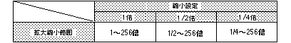

Return to previous page | Return to menu | Go to next page
void
Scroll function
NBG scaling
void slZoomNbg0(x , y)
void slZoomNbg1(x , y)
FIXED x ;
FIXED y ;
x Reciprocal of enlargement / reduction ratio with respect to X axis direction of normal scroll y Reciprocal of enlargement / reduction ratio with respect to Y axis direction of normal scroll
Set the enlargement / reduction ratio of “NBG0, NBG1” that can be enlarged / reduced in normal scroll.
For the parameter, substitute the scale values in the X and Y axis directions with reciprocal numbers.
For example, if you want to enlarge the X-axis direction by a factor of 2.0, substitute 1/2 for parameter “x”.
None
The range that can be enlarged / reduced depends on the reduction setting of the scroll plane for enlargement / reduction.
Use the function “slZoomModeNbg0,1” to set the reduction.
Refer to the table below for the enlargement / reduction range according to the reduction setting.

Reference: Chapter 8 Scroll
slZoomNbh0,1